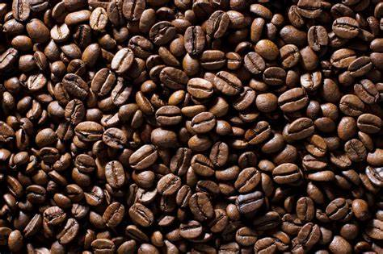

-
Haricots Arabica
• 100 DH
Aspect social et culturel : Le café fait partie des habitudes sociales et culturelles dans de nombreuses sociétés à travers le monde.
Bienfaits potentiels pour la santé : Des recherches suggèrent que le café, consommé avec modération, pourrait avoir des bénéfices pour la santé comme la protection du cerveau et la réduction de certains problèmes de santé.
-
Haricots Robusta
• 95 DH
Aspect social et culturel : Le café fait partie des habitudes sociales et culturelles dans de nombreuses sociétés à travers le monde.
Bienfaits potentiels pour la santé : Des recherches suggèrent que le café, consommé avec modération, pourrait avoir des bénéfices pour la santé comme la protection du cerveau et la réduction de certains problèmes de santé.
-
Pilules Liberica
110 DH
Détente et relaxation : Boire du café est une expérience relaxante pour beaucoup de gens et peut contribuer à améliorer l'humeur.
Ces sont quelques-uns des avantages courants de la consommation de café, bien qu'il soit important de l'utiliser avec modération et selon des normes appropriées pour éviter tout effet secondaire négatif potentiel.
-
Pilules Excelsa
• 80 DH
Détente et relaxation : Boire du café est une expérience relaxante pour beaucoup de gens et peut contribuer à améliorer l'humeur.
Ces sont quelques-uns des avantages courants de la consommation de café, bien qu'il soit important de l'utiliser avec modération et selon des normes appropriées pour éviter tout effet secondaire négatif potentiel.
-
Cafe Melange
• 120 DH
Détente et relaxation : Boire du café est une expérience relaxante pour beaucoup de gens et peut contribuer à améliorer l'humeur.
Ces sont quelques-uns des avantages courants de la consommation de café, bien qu'il soit important de l'utiliser avec modération et selon des normes appropriées pour éviter tout effet secondaire négatif potentiel.
-
Cafe Torrefie
• 70 DH
Aspect social et culturel : Le café fait partie des habitudes sociales et culturelles dans de nombreuses sociétés à travers le monde.
Bienfaits potentiels pour la santé : Des recherches suggèrent que le café, consommé avec modération, pourrait avoir des bénéfices pour la santé comme la protection du cerveau et la réduction de certains problèmes de santé.
-

Cafe Robuste
• 85 DH
Éveil et concentration : Le café stimule la vigilance et améliore la concentration grâce à la caféine qu'il contient.
Saveur délicieuse : Le café offre une expérience gustative agréable et variée, disponible sous différentes variétés et méthodes de préparation
-
Cafe Moka
• 90 DH
Aspect social et culturel : Le café fait partie des habitudes sociales et culturelles dans de nombreuses sociétés à travers le monde.
Bienfaits potentiels pour la santé : Des recherches suggèrent que le café, consommé avec modération, pourrait avoir des bénéfices pour la santé comme la protection du cerveau et la réduction de certains problèmes de santé.
-
Espresso
• 105 DH
Éveil et concentration : Le café stimule la vigilance et améliore la concentration grâce à la caféine qu'il contient.
Saveur délicieuse : Le café offre une expérience gustative agréable et variée, disponible sous différentes variétés et méthodes de préparation.